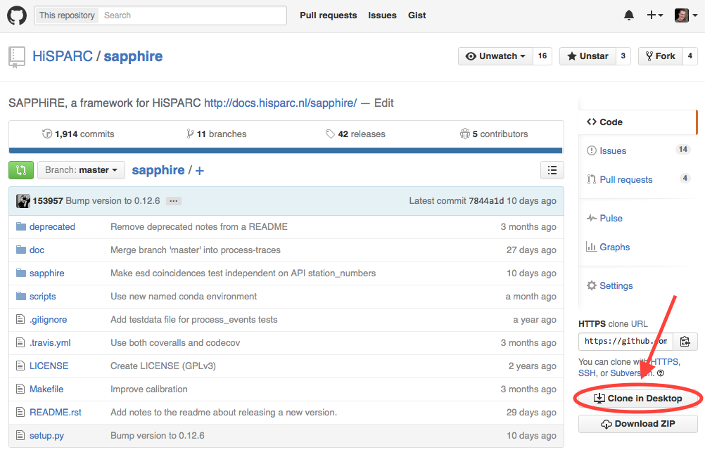

Installation¶
Python is a very versatile language. As such, it can be either installed with lots and lots of packages to create an environment for e.g. data analysis or game development, or it can be installed for a very specific task, taking up much less space. To install a complete environment without all the hassle, you can install a Python distribution which includes Python and a long list of packages. This is the recommended approach, certainly if you’re new to Python. If you really want, you can install a much smaller set of packages for which we’ll provide minimal instructions only.
Before we’ll go on describing how to install SAPPHiRE itself, we will first install the prerequisites.
Installing the prerequisites¶
Python distributions¶
SAPPHiRE supports both Python 2.7 and newer versions of Python, e.g. 3.5. If you don’t mind to install a large package, use a distribution. This mostly includes everything you’ll ever need. One such distribution is Anaconda. It includes many scientific python packages, as well as graphical environments for doing your work. Anaconda has packages available for the three major platforms: Windows, OS X and Linux.
Anaconda includes a graphical programming environment (Spyder) which makes it easy to write analysis scripts while creating plots, testing small snippets of code, or inspecting your variables.
Minimal installation (miniconda)¶
In theory, installing a Python package should be very easy. To install
SAPPHiRE, the Python package called sapphire would be retrieved from the
internet. It would have its dependencies listed and pip would pull them in
and all should be well. In fact, SAPPHiRE does have its dependencies
listed and Pip will pull them in. It is only then, that things start go
wrong. Whether you’ll experience difficulties depends on the operating system
you’re using and any previously installed software. But don’t worry, we’ve got
you covered.
Miniconda is the package manager used by the Anaconda distribution. Installation instructions can be found at https://conda.pydata.org/docs/install/quick.html. After installation, install the following package:
$ conda install --channel conda-forge hdf5
After this is should be possible to simply install SAPPHiRE using Pip (see below).
Minimal installation (OS-specific)¶
If you want to use a package manager specifically for your OS, follow the (minimal) instructions below for your operating system of choice.
Mac OS X¶
If you’re using Mac OS X, the easiest way to install open source software (like Python, the program language we’re using) including lots and lots of great packages, is done using Homebrew. Please follow the installation instructions (really easy) and when done, type the following into a terminal:
$ brew install python
This will install Python and Pip.
As of this writing, several of the dependencies listed by SAPPHiRE do not have their own dependencies listed in a way that Pip (or other tools, for that matter) know how to handle. To install matplotlib with its requirements, you can type:
$ brew install homebrew/python/matplotlib
Warning: this will install gcc and start a very long compilation process. Alternatively, with the introduction of wheels in Python, you can simply try to install packages like numpy, scipy and matplotlib using Pip:
$ pip install numpy scipy matplotlib
If you’re lucky, using a wheel will not need a compiler. We haven’t tried this ourselves for quite a while. YMMV.
Debian and derivatives (like Ubuntu)¶
Debian has a first-class package manager which other distributions and
operating systems have a hard time competing with. In my personal opinion,
anyway. Lots of Python packages can be installed using apt-get, but some
of them might be outdated, depending on the age of your distribution. Use
apt-get for Python packages at your own discretion (read: risk). Pip
handles Python packages very well, so you’ll probably need some packages to
install using Pip.
As of this writing, several of the dependencies listed by SAPPHiRE do not have their own dependencies listed in a way that Pip (or other tools, for that matter) know how to handle. Furthermore, matplotlib needs to be installed all by itself, and its dependencies must be installed before it.
You can try to install packages using apt-get, for example:
$ sudo apt-get install python-matplotlib
To figure out what you need, look at the prerequisites for SAPPHiRE, listed
in the setup.py file in the code repository. You can also try to install
SAPPHiRE using pip, and waiting for the installation to fail on some
prerequisites. If you then need development libraries, apt-get can help you
with that:
$ sudo apt-get build-dep python-numpy
will install everything you need to build numpy from source.
Installing SAPPHiRE¶
The SAPPHiRE package has been uploaded to PyPI so that pip knows where to find it.
There are now several scenarios for installing SAPPHiRE: let pip
install the release or development version or download the source code
and use setup.py to install it.
Just let me get to work!¶
These scenarios do not involve fetching the code. They will just install SAPPHiRE, so that you can get to work. To get the latest stable release version, simply issue:
$ pip install hisparc-sapphire
Done. Now get to work.
If you like living on the edge with a possibly broken version of SAPPHiRE, get the latest development version:
$ pip install https://github.com/hisparc/sapphire/zipball/master
Let me see the code!¶
If you’re interested in the development of SAPPHiRE, you can either go to the GitHub page or install the version control system (we use Git) yourself. For that, please see the GitHub Help pages.
To download the code and install SAPPHiRE, first go to https://github.com/hisparc/sapphire/. Then, click on the Clone in Desktop, which will prompt you to download the GitHub Desktop app (recommended).
Open a terminal and navigate to the top-level directory containing the code. Then issue:
$ python setup.py develop
This takes care of installing the missing dependencies and SAPPHiRE itself. Whenever you update the code using the GitHub Desktop application, the new code is immediately available.
Checking that SAPPHiRE is installed correctly¶
First off, the following is not an exhaustive check. But it will tell you if SAPPHiRE is, in fact, installed on your system and that Python knows how to find it.
Note
When you run this check from inside the top-level SAPPHiRE code directory, it will always return successfully. The reason for this is that Python also checks the current working directory for packages. So, run this check from e.g. your home directory.
Start a Python session. You can use a launcher of some type (e.g. the one from Python(x,y)), or open a terminal and type:
$ python
Or, if you prefer, IPython:
$ ipython
In fact, we recommend using IPython for interactive use. Then, try to import SAPPHiRE:
>>> import sapphire
If this returns without an error message, all is well and SAPPHiRE should be correctly installed. As an additional assurance the SAPPHiRE code tests can be executed. To run the tests simply call the function to run the tests:
>>> sapphire.run_tests()